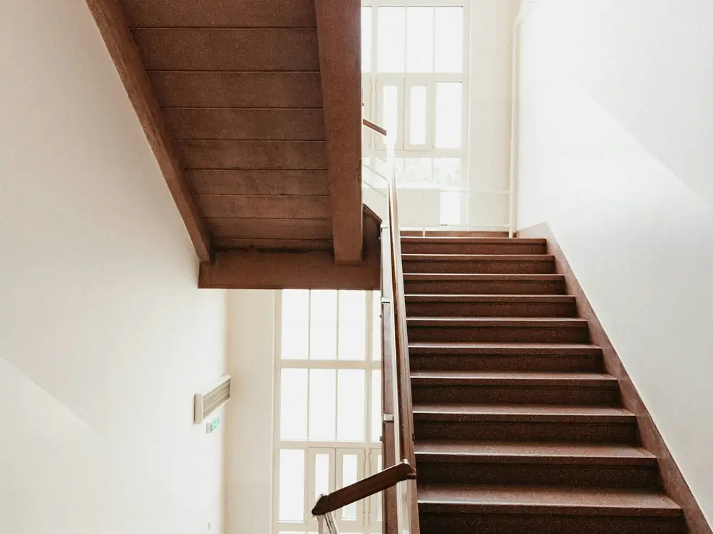
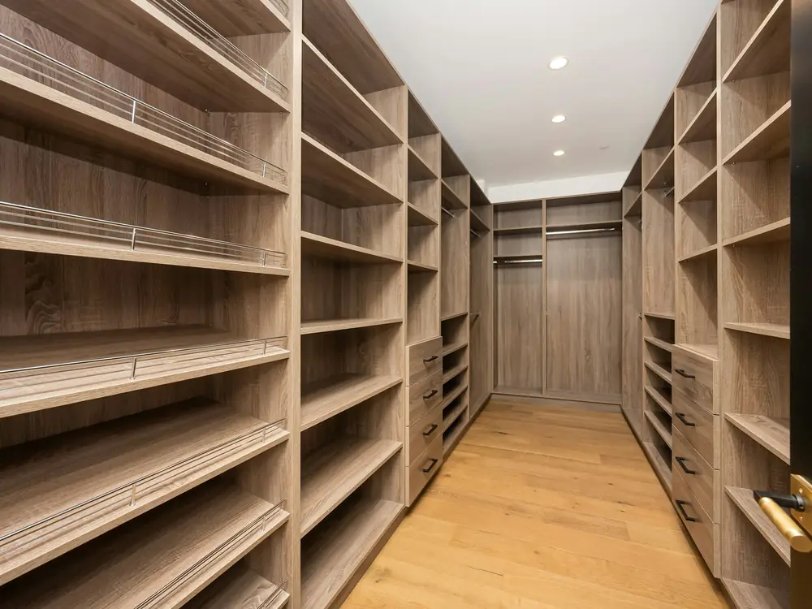

Nos chantiers
Quelques chantiers de ces derniers mois, de la charpente à l'agencement intérieur.
Nos chantiers, un par un

- Chantier
Charpente d'une maison neuve
- Lieu
- Burnhaupt-le-Haut
- Bois
- Sapin des Vosges
- Durée
- 2 jours de levage
Charpente en sapin des Vosges, taillée à l'atelier et levée en deux jours.

- Chantier
Escalier en chêne massif
- Lieu
- Maison de village, Sentheim
- Bois
- Chêne
- Durée
- 3 semaines
Escalier droit, marches de 40 mm, finition à l'huile naturelle.

- Chantier
Cuisine sur mesure
- Lieu
- Appartement, Thann
- Bois
- Chêne
- Durée
- 6 semaines
Façades en chêne, colonne four et îlot central.

- Chantier
Extension à ossature bois
- Lieu
- Maison, Cernay
- Bois
- Épicéa
- Durée
- 5 semaines
Extension de 30 m², ossature et charpente fournies et posées.

- Chantier
Escalier et garde-corps
- Lieu
- Maison, Masevaux
- Bois
- Hêtre
- Durée
- 4 semaines
Escalier en hêtre sous une trémie existante, garde-corps assorti.

- Chantier
Dressing sur mesure
- Lieu
- Maison, Mulhouse
- Bois
- Chêne clair
- Durée
- 2 semaines
Étagères et penderies en chêne clair, sur toute la longueur de la pièce.